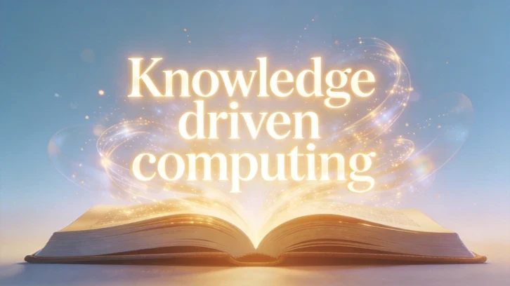

如何把 Agent 的判断与行动变成可恢复的软件事实 | KDC 工程补篇
DataHot 速览
本文从退款审批场景切入，指出 Agent 单次执行循环不等于业务就绪，系统必须让目标、判断、审批、执行、产物和反馈拥有稳定状态。作者提出业务因果链与运行事实链双链结构，将 Session、Harness 与执行环境解耦，并定义 Resume、Progress、Evaluation 三类 Contract 支撑状态恢复、交接与持续演进。适合 AI 架构师、Agent 系统工程师和数据平台建设者阅读。
为什么值得关注：数据从业者应关注 Agent 在生产环境中的可恢复、可控制与可审计能力，这是 Data Agent 从演示走向真实业务的关键工程基础。
本文目录 35 节
- 会执行一次循环，不等于可以运行一个产品
- 三种事实不能混在一起
- 生产级 Agent 需要两条可以连接的链
- ReAct、Harness 和 KDC 分别解决什么
- 公开实践不是一套统一理论，但正在回答同一组问题
- Harness 不是一个单体：Session、Harness 和执行环境应该解耦
- 最小运行对象：让现场拥有稳定归属
- Session、Context、State、Memory 和 Knowledge 不是同一个对象
- State、View 和 Control 必须分开
- State 是可恢复的运行事实
- View 是从事实派生的展示
- Control 是命令，不是直接改状态
- 语义责任必须分开，物理存储可以统一
- 一份最小 State Schema
- 从判断到执行，需要经历一次可恢复的状态变化
- 1. 形成业务判断
- 2. 提出能力调用建议
- 3. 控制平面要求确认
- 4. View 展示审批
- 5. 用户提交 Control
- 6. 能力运行时执行
- 7. Runtime 记录执行结果
- 8. 现实反馈关闭业务闭环
- Checkpoint 不等于 Durable Execution
- Run 结束以后，哪些事实可以离开 Session
- 用七个问题检查 Memory 与 Knowledge 是否真正连通
- 日志和 Trace 仍然不等于运行状态
- 长时间任务还需要 Progress Contract
- Agent Harness 本身也需要 Evaluation Contract
- Harness 的假设也有生命周期
- 不要先建设一个庞大的 Harness 平台
- 实践：对一条 Agent 流程做恢复演练
- 从“模型做过什么”走向“系统可以相信什么”
- 理论边界与开放问题
- 参考
原文
vivo 肖博
- 蔡芳芳
- 2026-08-27北京
- 本文字数：15708 字 阅读完需：约 52 分钟
AI摘要
本文聚焦 AI Agent 在真实业务中落地的关键工程挑战：如何使推理、授权与行动转化为可恢复、可控制、可审计的软件运行事实。提出“业务因果链”与“运行事实链”双链结构，解耦 Session、Harness 与执行环境，并定义三类 Contract 支撑状态一致性与生命周期管理。
关键观点：① Agent 单次执行不等于业务就绪，需保障目标到反馈的稳定状态；② 领域现实、业务判断事实、软件运行事实须分层建模；③ Resume/Progress/Evaluation 三类 Contract 是运行可恢复与可演进的核心契约。
适合 AI 架构师、Agent 系统工程师、MLOps 工程师阅读。

作者：vivo 肖博
AI 合作者：ChatGPT（GPT-5.5）
创作模式：Human-led, AI-collaborated
责任声明：文章观点、理论体系及最终内容由作者负责；AI 参与讨论、推演、表达优化及部分内容生成。
研究说明：知识驱动计算（Knowledge-driven Computing, KDC）是我们正在提出和持续打磨的一套 AI 应用软件工程理论，目前仍处于开放研究阶段。前五篇建立了从 Reality 到 Feedback 的理论闭环。这篇补篇不增加新的 KDC 核心概念，而是讨论其中一段更具体的工程问题：推理、授权和行动如何变成可恢复、可控制、可审计的软件运行事实。 本文摘要：会推理、会调用 Tool，只能说明 Agent 能够完成一次执行循环。要进入真实业务，系统还必须让目标、判断、审批、执行、产物和反馈拥有稳定状态，并在刷新、重连、进程重启和人工介入后继续保持一致。本文区分领域现实、业务判断事实和软件运行事实，提出业务因果链与运行事实链的双链结构；进一步将 Session、Harness 与执行环境解耦，区分 Session、Context、State、Memory 和 Knowledge，并以 Resume Contract、Progress Contract 与 Evaluation Contract 说明一次 Agent 运行如何被恢复、交接、验证和持续演进。 KDC 系列文章：
- 《软件从现实开始：知识驱动计算（KDC）的 Reality First 主张》
- 《软件不是文件：KDC 的知识工程主张》
- 《调用成功不等于判断正确：KDC 的行动治理主张》
- 《保存历史不等于形成记忆：KDC 的长期运行主张》
- 《KDC 全景：从现实到反馈的完整工程模型》
- 《如何把 Agent 的判断与行动变成可恢复的软件事实 | KDC 工程补篇》（本文）
还是从退款这个具体场景开始。
用户问售后 Agent：
帮我看看这笔订单能不能退。如果可以，就直接帮我处理。
Agent 查询订单，引用当前退款政策，判断订单符合条件，然后准备调用退款能力。由于退款会改变订单和资金状态，系统要求用户确认。页面显示了一条审批提示：
订单符合退款条件。是否确认发起退款？
用户还没有点击确认，页面突然刷新。
刷新之后，审批提示消失了。聊天记录里还能看到 Agent 说过“准备退款”，但前端不知道审批是否仍然有效，后端不知道用户是否已经做过决定，能力运行时也不知道应该继续、暂停还是取消。
更危险的情况是，退款请求已经提交给支付渠道，但后端在写入本地完成状态之前重启。恢复后，系统只看到“任务尚未完成”，于是再次调用退款接口。
这一次，问题不在知识是否可靠，也不在 Agent 是否理解了用户目标。判断和授权规则可能都是正确的，系统仍然可能因为缺少稳定运行事实而丢失现场、重复执行或无法追责。
这说明，从“Agent 做出了正确判断”到“系统可靠地完成了行动”之间，还有一层不能省略的工程结构。
会执行一次循环，不等于可以运行一个产品
ReAct 可以把模型行为概括成一个循环：
Thought -> Action -> Observation复制代码
模型根据当前上下文形成下一步，调用 Tool，读取结果，再继续判断。这个抽象很好地解释了模型如何在一次任务中交替推理和行动。
但产品系统面对的不是一段始终连续的模型调用。页面会刷新，连接会断开，进程会重启，Tool 会长时间运行，审批可能等待几个小时，外部系统可能已经完成操作但响应丢失，子 Agent 也可能在另一个执行环境中继续工作。
生产系统还需要回答：
- 当前是哪一次 Run、哪一个 Turn 在运行？
- 模型已经提出了什么行动，行动是否得到授权？
- Tool 是尚未调用、正在执行、已经完成，还是结果未知？
- 用户刷新页面后，原审批是否仍然有效？
- 进程重启后，应该从哪里恢复？
- Artifact 和子 Agent 属于哪个目标、判断和行动？
- 用户点击 Stop 时，究竟停止哪一次运行？
- 外部行动是否已经发生，重试会不会造成重复影响？
这些问题不能依靠模型“记住”，也不能让 UI 从聊天文本中猜测。它们必须成为系统可以持久化、引用和恢复的运行事实。
我们把承载这类责任的工程系统称为 Agent Harness，并提出通过共享 State Schema、Runtime Event、View 和 Control，把模型行为转化为可恢复、可控制、可追溯的产品事实。vivo 团队关于从 ReAct 到 Agent Harness 的工程讨论，是本文继续追问状态归属、恢复边界和产品一致性的一个直接起点。
这个视角与 KDC 的对象化、运行时化和治理化高度契合。但在接入 KDC 之前，需要先澄清“事实”并不只有一个层次。
三种事实不能混在一起
在 Agent 系统中，至少存在三种需要分别管理的事实。
领域现实是应用软件的最终参照物。软件只能通过接口、事件、人工确认和其他表示间接观察它。
业务判断事实说明系统基于什么目标、知识和证据形成结论，又为什么建议某项行动。这里的“事实”不是说判断必然正确，而是说系统确实在特定上下文和依据下形成过这项判断。KDC 用推理对象或等价的 AI Action Record 表达这类责任。
软件运行事实则说明某次运行中已经发生了什么：Run 是否开始，审批是否挂起，Tool 是否执行，Artifact 是否创建，Checkpoint 位于哪里。
三者有关联，但不能互相替代：
tool.call.completed 不等于退款已经到账pendingApproval = null 不等于用户已经同意退款页面显示“已完成” 不等于业务目标已经实现复制代码
Runtime 可以权威地声明“这次 Tool Call 已经完成”，却不能仅凭这个运行事实证明用户已经收到资金。UI 可以显示审批条，却不能因为审批条消失就推断用户已经授权。
KDC 与 Agent Harness 在这里形成互补：Harness 让运行事实可信，KDC 继续追问这些运行事实对应什么业务判断和领域现实。
生产级 Agent 需要两条可以连接的链
KDC 的业务因果链关注系统为什么行动，以及行动是否实现现实目标：
Reality -> Knowledge / Memory -> Reasoning -> Skill -> Capability -> Policy Decision -> Action -> Feedback -> Reality复制代码
Agent 产品的运行事实链关注一次执行如何持续存在：
Runtime Event -> State->View -> Checkpoint -> ResumeUser Control -> Runtime Event复制代码
两条链不能各自独立。只保留业务因果链，系统可能解释得清楚却无法恢复。只保留运行事实链，系统可以恢复调用，却不知道行动是否具备业务资格，也不知道最终结果是否实现现实目标。
flowchart LR subgraph B[“业务因果链：为什么行动“] direction TB T[“业务目标“] --> K[“Knowledge / Memory“] K --> Q[“Reasoning Object“] Q --> L[“Skill“] L --> C[“Capability Proposal“] C --> P[“Policy Decision“] P --> A[“Action“] A --> F[“Reality Feedback“]end subgraph R[“运行事实链：执行到哪里“] direction TB E[“Runtime Event“] --> S[“State“] S --> V[“View“] V --> U[“User Control“] U --> E S --> H[“Checkpoint / Resume“]end Q -.->|reasoningObjectId| S L -.->|skillId| S C -.->|capabilityId| S P -.->|policyDecisionId| S A -.->|toolCallId| E F -.->|feedbackId| S复制代码
图：业务因果链与运行事实链通过稳定身份连接
连接两条链的关键不是复制更多文本，而是稳定身份：
runIdturnIdreasoningObjectIdskillIdcapabilityIdpolicyDecisionIdapprovalIdtoolCallIdartifactIdfeedbackId复制代码
这些身份让系统知道，一条审批属于哪次判断，一次 Tool Call 来自哪个能力，一份 Artifact 支持哪个目标，一条反馈又应该修正哪次行动。
ReAct、Harness 和 KDC 分别解决什么
三者并不是互相替代的架构方案。
从 KDC 视角看，Agent Harness 可以承担推理运行时、能力运行时和运行时可观测的一部分工程责任。它不是 KDC 的新核心对象，也不等于完整的能力控制平面。
更准确的关系是：
ReAct 让模型能够连续决定下一步，Harness 让这些步骤成为可靠的软件运行事实，KDC 让运行事实可以追溯到业务目标、知识依据、行动资格和现实结果。
公开实践不是一套统一理论，但正在回答同一组问题
“Agent Harness”目前更像一组正在收敛的工程实践，而不是一套已有统一对象、边界和标准实现的理论。不同项目从不同故障出发，各自强调了生产级 Agent 的一部分责任。
这些实践共同暴露了状态连续性、外部副作用、长任务交接和系统评测问题，但对状态是否应该独立持久化、能否从线程上下文推导，并没有形成统一结论。Managed Agents 和 Durable Execution 更强调进程外的持久记录，12-Factor Agents 则更强调在可能时从统一线程上下文推导执行与业务状态。
KDC 与它们的关系不是用新名称重新包装这些机制。KDC 提供的是更上层的业务因果约束：运行现场要连接哪一次判断，判断依据什么知识，Capability 为什么有资格被使用，授权如何形成，以及最终由什么现实反馈证明目标实现。本文后面的 Session、Resume、Progress 和 Evaluation 等契约，是把公开工程经验接入这条业务因果链的尝试。
本文用 Contract 表示一组可以被实现、检查和测试的工程约束或交接模板，不把 Resume Contract、Progress Contract、Evaluation Contract 增加为 KDC 核心对象。
Harness 不是一个单体：Session、Harness 和执行环境应该解耦
工程讨论中常把 Agent Harness 画成包围模型、工具和状态的一个大盒子。这个画法便于概括，却容易让团队把不同生命周期、不同信任等级的责任部署在同一个进程里。
Anthropic 在 Managed Agents 的实践中提出了一个有价值的拆分：Session 保存可以持续追加的运行记录，Harness 负责循环、上下文组织和控制逻辑，Sandbox 承担代码、命令或工具的实际执行。三者通过稳定接口协作，而不必共享生命周期。Anthropic 的 Managed Agents 实践还进一步说明，Harness 本身可以尽量无状态；即使 Harness 进程崩溃，新的实例也可以从外部持久化的 Session 重建现场。
把这个结构放入 KDC，可以得到一张更完整的运行拓扑：
flowchart LR U[“用户 / 外部事件“] --> G[“Agent Harness<br/>循环、上下文与控制“] G <-->|“读取 / 追加事件“| S[(“Durable Session<br/>Event Log + State“)] G -->|“Capability Command“| P[“能力控制平面 / 代理“] P --> X[“Sandbox / Tool / MCP Server“] V[“凭证与密钥库“] -->|“短期授权“| P X -->|“Observation / Result“| P P -->|“Runtime Event“| S S -->|“事实与反馈引用“| K[“KDC 业务因果链“] K -->|“知识、策略与资格“| G复制代码
图：可替换 Harness、持久化 Session 与隔离执行环境
其中每一部分承担不同责任：
这项拆分带来三个直接收益。
第一，恢复不再依赖原来的 Harness 实例。只要 Session 中的事件和状态足以重建现场，新的 Harness 或模型实例就可以接手；不同版本的运行器还必须满足 Session 接口、事件 Schema 和恢复语义兼容，或者先完成显式迁移。
第二，“大脑”和“手”可以分别扩展。一个 Harness 可以驱动多个隔离执行环境；一个长时间运行的 Sandbox 也可以在模型调用结束后继续完成任务。模型上下文结束，不等于外部工作必须终止。
第三，安全边界从 Prompt 约束变成结构约束。高权限凭证不进入模型上下文，也不直接暴露给不可信 Sandbox。能力代理根据主体、Capability、Policy Decision 和有效期发放最小权限或代为签名，并记录：
executionEnvironmentIdsandboxTrustLevelcredentialScopecredentialLeaseIdnetworkPolicydataAccessPolicy复制代码
这并不要求所有系统立刻部署独立 Session 服务和 Sandbox 平台。它首先要求团队在接口和数据归属上把责任拆开：什么必须在进程外持久化，什么可以随 Harness 丢弃，什么只能由可信控制面执行，什么凭证绝不能进入模型可见范围。
最小运行对象：让现场拥有稳定归属
KDC 的核心对象关注知识、记忆、推理、Skill 和 Capability。生产级 Agent 还需要一组支撑运行连续性的工程对象。
这些对象不必都成为独立数据库表，也不必升级成新的理论名词。它们首先是一组必须有明确 Owner、生命周期和持久化边界的工程责任。
对象化的判断标准仍然是：如果某个状态影响恢复、审批、继续执行、跨端一致、审计或结果检查，它就不应该只存在于聊天文本、Prompt、组件变量或临时缓存中。
Session、Context、State、Memory 和 Knowledge 不是同一个对象
“让 Agent 记住”在工程讨论里经常同时指五件不同的事：保存对话、恢复运行、给模型组装上下文、跨任务保留经验，以及提供经过治理的知识。它们都与历史有关，却不能共享同一个生命周期和可信等级。
Google ADK 的 Session 文档将 Session、State 和 Memory 分开：Session 表示当前交互线程及其事件，State 是这个 Session 中的临时数据，Memory 则支持跨 Session 检索。LangGraph 的持久化设计也区分线程内 Checkpointer 与跨线程 Store。这些划分说明“恢复当前任务”和“让历史影响未来任务”需要不同的持久化语义。
KDC 在此基础上还需要把 Context 和 Knowledge 单独列出：
最关键的区别是：
Session 是可恢复的历史来源，Context 是一次模型调用对历史的选择性投影。
Context 可以被裁剪、压缩、重排或重新生成。它不应该是唯一保存审批、Tool 状态或外部请求身份的地方。一次上下文压缩如果遗漏“用户已经批准”，不应该让审批重新变成待处理；一次新的模型调用如果没有看到全部 Trace，也不应该改变已经发生的外部事实。
为了使上下文选择可解释，生产系统可以为每次 Context Projection 记录：
contextBuildIdsourceEventRangeincludedObjectRefsomittedObjectRefscompactionPolicyVersionpromptTemplateVersiontokenBudget复制代码
这些字段不是要永久保存模型看到的每一个 Token，而是让团队能够回答：这次判断基于 Session 中的哪些事实，哪些内容被摘要或省略，使用的是哪一版上下文策略。
同样，跨 Session 可检索也不等于已经形成 KDC Memory，更不等于形成 Knowledge。一个旧 Tool Result 可以进入搜索索引，但只有经过来源确认、适用范围判断、时效治理和必要验证后，它才有资格稳定影响未来判断或行动。
State、View 和 Control 必须分开
一个常见失败方式，是让前端从消息文本中推断运行状态。
例如，模型输出：
需要用户确认后才能发起退款。复制代码
UI 识别到“需要确认”，于是本地生成一个审批按钮。这个实现短期内可以工作，却没有回答：
- 这条审批对应哪个 Run、Turn 和 Tool Call？
- 刷新之后如何恢复？
- 后端是否真的暂停在可恢复位置？
- 用户点击同意时，决定应该发送给谁？
- 策略已经变化或审批已经过期时怎么办？
因此需要区分三类责任。
State 是可恢复的运行事实
State 由 Runtime 或明确的业务边界产生并持久化。它可以包含：
activeRuncurrentTurncheckpointpendingApprovalstoolCallsartifactRefssubagentRefsruntimeStatus复制代码
View 是从事实派生的展示
View 可以包含：
isBusycanStopapprovalBannertoolBadgessubagentProgressartifactPanel复制代码
pendingApproval 存在，所以展示审批条。activeRun 处于运行状态，所以允许 Stop。View 可以随着交互设计变化，但不应该反向成为运行事实的权威来源。
Control 是命令，不是直接改状态
用户点击批准、拒绝、停止或恢复时，UI 发送 Control：
resume(approvalId, decision)stop(runId)retry(toolCallId)reload(threadId)复制代码
Control 表示“请求系统做什么”，不表示事情已经发生。用户点击 Stop 后，UI 不能直接把 Run 标记为已停止。Runtime 接收命令、处理取消边界，再产生新的 Event 和 State。
可以把边界压缩成一句话：
Runtime 写运行事实，View 读取运行事实，Control 提交命令，UI 不替 Runtime 补写运行事实。
语义责任必须分开，物理存储可以统一
强调 State、View、Control、Session 和 Memory 的区别，不意味着第一版工程必须建立五套数据库。
12-Factor Agents 的第五项原则主张在可能的情况下统一执行状态和业务状态，从线程上下文中推导当前进度。这个方向有明确价值：单一事件序列更容易序列化、分叉、回放和调试，也减少了多个状态库之间的同步问题。
但“统一存储”不应退化为“从自然语言消息猜测权威状态”。尤其在退款、支付、权限变更等场景，下面这些状态必须有明确类型：
approval.requiredapproval.grantedcapability.authorizedtool.call.dispatchedtool.call.acceptedtool.call.result_unknownfeedback.success_criteria_met复制代码
一种平衡方式是采用统一的追加事件日志，同时为不同语义建立强类型事件和投影：
{ “eventId“: “event-109“, “eventType“: “approval.required“, “runId“: “run-20260727001“, “turnId“: “turn-003“, “producer“: “policy-runtime“, “reasoningObjectId“: “reasoning-021“, “capabilityId“: “refund-order-v2“, “correlationId“: “refund-intent-031“, “causationId“: “event-108“, “schemaVersion“: 2, “occurredAt“: “2026-07-27T16:42:10+08:00“, “payload“: { “approvalId“: “approval-017“, “risk“: “high“, “expiresAt“: “2026-07-27T18:00:00+08:00“ }}复制代码
同一份日志可以派生 Runtime State、用户 View、审计记录和评测轨迹，避免多处写入互相冲突。但每种投影仍然有自己的 Schema、Owner 和使用资格。审批状态必须由审批事件归约，不能因为 Agent 在文本中说“用户应该会同意”而改变；业务结果状态必须根据 Feedback Contract 检查反馈来源、证据和成功标准，不能因为 Tool 返回 200 就直接改写。
因此，更准确的工程原则是：
语义责任必须分开，物理存储可以统一；能从事件确定性归约的状态不必重复写，不能可靠推导的高风险事实必须显式记录。
一份最小 State Schema
下面的结构只是用于说明责任边界，不是 KDC 标准 Schema：
{ “session“: { “sessionId“: “session-refund-001“, “lastEventId“: “event-109“, “stateSchemaVersion“: 2 }, “run“: { “runId“: “run-20260727001“, “status“: “waiting_for_approval“, “goalRef“: “goal-refund-001“, “currentTurnId“: “turn-003“, “checkpointId“: “checkpoint-008“, “contextBuildId“: “context-build-052“ }, “runtime“: { “harnessVersion“: “harness-1.8.0“, “modelVersion“: “model-release-202607“, “executionEnvironmentId“: “sandbox-014“ }, “reasoning“: { “reasoningObjectId“: “reasoning-021“, “conclusion“: “eligible_but_requires_confirmation“, “knowledgeRefs“: [“refund-policy-v4“], “risk“: “high“ }, “pendingApprovals“: [ { “approvalId“: “approval-017“, “capabilityId“: “refund-order-v2“, “toolCallId“: “tool-call-031“, “policyDecisionId“: “policy-decision-044“, “status“: “pending“, “expiresAt“: “2026-07-27T18:00:00+08:00“ } ], “toolCalls“: [ { “toolCallId“: “tool-call-031“, “capabilityId“: “refund-order-v2“, “status“: “proposed“, “idempotencyKey“: “refund:order-001:intent-031“, “externalRequestId“: null, “dispatchedAt“: null, “acceptedAt“: null, “resultRef“: null, “reconciliationStatus“: “not_required“, “lastError“: null } ], “artifactRefs“: [], “subagentRefs“: []}复制代码
这个结构同时保留了三类信息：
- 运行连续性所需的
runId、状态、Checkpoint 和审批； - 业务因果追溯所需的推理对象、知识、能力和策略判定引用；
- 副作用控制所需的 Tool Call 状态、幂等键、外部请求和对账信息。
如果 State 只保存 pendingApproval = true，它仍然不够。系统还需要知道等待的是哪项行动、来自哪次判断、由哪个策略要求、什么时候失效，以及恢复后应该回到哪个执行位置。
同一个 Tool Call 发出后，如果支付渠道可能已经受理但响应丢失，State 不应回退成“尚未调用”，而应保留同一个 toolCallId 和 idempotencyKey：
{ “run“: { “runId“: “run-20260727001“, “status“: “awaiting_reconciliation“, “checkpointId“: “checkpoint-009“ }, “toolCalls“: [ { “toolCallId“: “tool-call-031“, “capabilityId“: “refund-order-v2“, “status“: “result_unknown“, “idempotencyKey“: “refund:order-001:intent-031“, “externalRequestId“: “payment-request-8841“, “dispatchedAt“: “2026-07-27T16:48:12+08:00“, “acceptedAt“: null, “resultRef“: null, “reconciliationStatus“: “pending“, “lastError“: “response_timeout“ } ], “outcomeVerification“: { “status“: “pending“, “feedbackRefs“: [] }}复制代码
这里的 result_unknown 不是失败的另一种写法，而是一个禁止盲目重试的恢复边界。Runtime 必须先使用外部请求身份查询或对账，再决定完成、补偿还是转人工。
从判断到执行，需要经历一次可恢复的状态变化
回到退款案例，一条更完整的运行路径可以这样设计。
1. 形成业务判断
推理运行时识别用户目标，引用退款政策和订单事实，形成推理对象：订单符合退款条件，但需要用户最终确认。
2. 提出能力调用建议
Agent 选择退款 Skill，并提出调用 refund-order-v2 的建议。此时只是行动建议，不是执行授权。
3. 控制平面要求确认
策略根据能力风险、用户目标和当前证据返回 requires_confirmation。Runtime 产生 approval.required 事件，写入 Pending Approval，并创建 Checkpoint。
4. View 展示审批
UI 从 Pending Approval 派生审批条。页面刷新后，审批条仍然可以从持久化 State 恢复，不需要重新解析聊天文本。
5. 用户提交 Control
用户确认后，前端发送 resume(approvalId, allow)。Runtime 校验审批是否仍然有效、主体是否一致、能力版本和前置条件是否发生变化。
6. 能力运行时执行
授权通过后，能力运行时调用底层 Tool。执行请求携带稳定的幂等键，并记录外部请求身份。
7. Runtime 记录执行结果
Tool 返回后，Runtime 产生 tool.call.completed 或 tool.call.result_unknown，更新 State 和 Checkpoint。结果未知时，系统不能简单回到“未执行”。
8. 现实反馈关闭业务闭环
支付渠道状态、对账结果或用户确认随后进入 Feedback Contract。只有系统取得符合成功标准的有效证据，才可以表达“退款已经到账”，并保留证据来源和验证时间。
这条路径将“业务上为什么可以做”和“软件上已经做到哪里”连接了起来。
Checkpoint 不等于 Durable Execution
持久化 Checkpoint 只能说明系统知道从哪里恢复，不能自动保证外部行动只发生一次，也不能保证恢复后的代码路径与中断前完全相同。
LangGraph 的 Interrupt 机制会在暂停时持久化状态，并通过同一个 Thread 恢复；但恢复时所在 Node 会从头重新执行，因此 Interrupt 之前的副作用必须能够安全重放。Temporal 的 Event History则用持久化事件历史记录 Workflow 生命周期，通过重放历史重建逻辑状态，并把外部副作用交给 Activity 等受控边界。
两类实践共同说明，Checkpoint 要与至少三个概念配合：
模型生成“执行退款”只产生行动建议。策略通过后，Runtime 才创建 Capability Command；能力运行时接收命令并调度 Tool Call；外部结果被观察和验证后，系统再追加 Event。把命令、执行和事实分开，才能在恢复时知道应该重放逻辑、查询外部状态，还是禁止再次执行。
考虑下面的时间窗口：
退款请求已经被支付渠道受理 -> 后端尚未写入 tool.call.completed -> 进程重启-> 本地状态仍显示 running复制代码
恢复后直接重试，可能再次发起退款。生产系统至少要考虑：
- 为高影响调用生成稳定幂等键；
- 区分“命令已发送”“外部系统已受理”“业务结果已确认”；
- 在结果未知时先查询或对账，而不是盲目重试；
- 使用事务消息、Outbox 或等价机制减少本地状态与事件发布之间的空窗；
- 记录能力的重试、补偿和人工接管策略；
- 让同一个 Approval 不能被重复消费；
- 恢复时重新验证已经变化的权限、政策和业务前置条件。
这些规则不应该散落在某个 Agent Prompt 中，而应该形成一份可以由 Runtime 执行和测试的 Resume Contract：
对于高影响行动，执行状态与结果验证状态应该分别管理：
Action Execution Statusproposed -> authorized -> dispatching -> accepted -> completed / faileddispatching / accepted -> result_unknown -> reconciling -> completed / failed / manual_handoffOutcome Verification Statusnot_observed -> pending -> confirmed_success / confirmed_failure / inconclusive复制代码
执行状态回答 Capability Command 和 Tool Call 已经走到哪里；结果验证状态回答系统掌握的反馈证据是否满足业务成功标准。二者通过 toolCallId、feedbackId 和目标引用连接，但不共享一个终态。Run 可以在外部工作已经可靠移交、结果仍为 pending 时结束，后续 Feedback 再更新业务结果状态。
result_unknown 不是普通失败。它表示系统缺少足够证据判断外部行动是否已经发生，默认重试可能扩大风险。此时应该进入查询、对账或人工接管，而不是回退到 authorized 再次发起。
同样，Stop 也不是一个瞬间完成的布尔值。系统可能已经停止模型生成，却无法取消外部 Tool。它需要区分：
stop.requestedmodel.cancelledtool.cancellation_requestedtool.cancelledexternal_action_irreversiblerun.stopped复制代码
可恢复不是“重新加载最后一条消息”，而是知道哪些事实已经发生、哪些行动仍在进行、哪些结果尚不确定，以及下一步怎样继续才不会扩大现实风险。
Run 结束以后，哪些事实可以离开 Session
前文已经区分了 Session、State、Memory 和 Knowledge。更具体的工程问题是：Run 结束以后，哪些信息应该清理，哪些只为审计保留，哪些可以影响未来？
Checkpoint、Pending Approval 和 Active Run 用于恢复同一次任务。它们回答：
这次运行执行到哪里？
记忆对象用于让历史在受治理条件下影响未来任务。它回答：
这段历史是否仍然可以影响未来判断和行动？
一次退款 Run 结束后，Checkpoint 可以归档或清理，Pending Approval 必须关闭，短期凭证应该撤销。Runtime Event 可以根据审计、隐私和合规要求保留，但“被保留”不表示“可以被未来 Agent 检索并使用”。
此次运行中的内容进入未来，可以经过一条显式晋升路径：
Runtime Event / Feedback -> Candidate Experience -> 来源与现实结果验证 -> 适用范围、主体和时效判断 -> Memory Object -> 多次验证与抽象 -> Knowledge Candidate复制代码
例如，“这一次退款接口耗时 18 秒”通常只是运行记录；“该用户明确要求退款进度只通过短信通知”可能成为有期限的用户记忆；“某渠道在返回受理后仍需通过对账事件确认到账”在多次验证、明确边界和治理后，才可能形成可供未来推理使用的知识或规则。
用七个问题检查 Memory 与 Knowledge 是否真正连通
团队可以用下面七个问题评估当前的记忆与知识工程能力：
这条记忆来自什么经历？ 它为什么仍能影响当前任务？ 哪些记忆支持了这项候选知识？ 这项知识经过了什么验证？ 哪些反馈强化或推翻了它？ 它目前能支持哪些判断和行动？ 现实变化后，系统会降级、替换还是停止使用它？
这七个问题依次检查来源追溯、记忆使用资格、经验到知识的证据链、知识验证、反馈修正、行动边界和生命周期治理。如果系统只能回答“内容存在哪里、如何被召回”，却不能回答这些问题，那么它仍然主要是一个存储与检索系统，还没有形成 Memory 与 Knowledge 相互连接的运行能力。
因此：
持久化 State ≠ 形成 Memory能够恢复 Run ≠ 历史可以影响未来保存所有 Event ≠ 获得组织经验复制代码
把两者混在一起，会让临时运行状态长期污染用户画像，也会让真正需要复用的经验淹没在事件日志中。反过来，如果所有 Session 都在任务结束后整体删除，团队也无法从真实结果中形成受验证的经验。关键不是“全部保存”或“全部遗忘”，而是为不同对象设置明确的使用资格、保留期限、删除机制和晋升路径。
日志和 Trace 仍然不等于运行状态
日志、Trace 和 Event 都很重要，但它们的职责不同。
Trace 适合还原一次请求经过哪些组件以及耗时和错误。Event 表达某项状态变化已经发生。State 表达系统当前可恢复的事实。Checkpoint 保存继续执行所需的位置和上下文。
系统可以从完整 Event Log 重建 State，也可以持久化 State Snapshot 并保留增量事件。具体方案取决于规模、恢复时延、审计要求和基础设施能力。
无论采用哪种方式，运行信号都应该携带稳定的业务因果引用：
runIdreasoningObjectIdcapabilityIdpolicyDecisionIdtoolCallIdfeedbackId复制代码
否则，团队只能知道某个 Tool 在某个时间失败，却不知道它服务什么目标、基于什么知识、为什么被允许，也不知道错误应该回到推理、治理、能力实现还是外部系统。
长时间任务还需要 Progress Contract
有些 Agent 任务会跨越多个上下文窗口、多个模型调用，甚至多个工作日。此时，持久化完整 Session 仍然不够。下一次接手的 Agent 虽然可以读取全部历史，却不一定能迅速判断当前基线是否可用、哪些工作已经验证、哪些只是尝试，以及接下来最安全的一步是什么。
Anthropic 关于长时间运行 Agent Harness 的研究发现，仅依赖上下文压缩很容易让后续 Agent 高估进展、重复修改或破坏已经工作的部分。其工程方案包括初始化 Agent、结构化功能清单、进度文件、版本历史、环境启动脚本，以及每个会话只推进一个可验证增量。
把这类经验推广到业务 Agent，可以定义一份 Progress Contract。它不是自由文本工作日志，而是当前工作现场的结构化交接面：
例如，一个“协助完成供应商准入”的 Agent 可能跨越材料收集、合规检查、人工补件、审批和系统开户。Progress Contract 不应该只写“资料基本完成”，而应明确：营业执照已经验证，税务信息仍待人工确认，合规审批尚未发生，开户 Capability 因此仍不可用；下一步只能请求补件，不能重复创建供应商。
Progress Contract 与前面的几个对象仍然不同：
Checkpoint 说明从哪里恢复执行Runtime State 说明当前机器状态Progress Contract 说明跨 Session 如何可靠接手工作Memory 说明哪些历史有资格影响未来Knowledge 说明未来判断可以依据什么复制代码
一次长任务会话开始时，Harness 应先恢复环境、读取 Progress Contract 并验证基线；结束前则应关闭不完整副作用、更新工作项、附上证据，并留下一个可执行的下一步。这样，交接不再依赖下一次模型从几十万 Token 的历史中自行揣测现场。
Agent Harness 本身也需要 Evaluation Contract
Agent 能完成演示，不代表 Harness 能承担生产责任。模型、Prompt、上下文选择、恢复逻辑、Capability 描述和策略代理共同决定系统行为，因此不能只单独评价模型。
Anthropic 的 Agent 评测方法区分了 Agent Harness 与 Evaluation Harness，并进一步区分 Transcript 或 Trajectory 和 Outcome：前者是 Agent 采取过的路径，后者是任务结束后环境真正处于什么状态。这个区分与 KDC 的核心问题高度一致：一条漂亮的推理轨迹不能代替现实反馈，一句“退款成功”也不能代替到账事实。
对 KDC 工程实现而言，至少需要四类 Grader：
这些 Grader 可以组合确定性代码检查、模型判定和人工复核。高风险不变量应尽量使用代码或权威数据源验证，例如“同一审批只能消费一次”“未经授权不得调用退款能力”；表达质量、解释完整性等开放问题可以使用模型或人工评价。
一份 Evaluation Contract 可以包含：
taskDefinitioninitialEvidenceSnapshotsuccessFeedbackCriteriaforbiddenOutcomesrequiredCapabilitiesforbiddenCapabilitiesinterruptionInjectionstrajectoryGradersrecoveryGradersoutcomeGradersgovernanceGraderstrialCountversionMatrixreleaseThresholds复制代码
initialEvidenceSnapshot 保存的是系统在 Trial 开始时获得的现实表示、来源和版本，而不是对 Reality 的直接复制。这样，Evaluation Contract 既能固定评测初始条件，也不会把数据快照误写成现实本身。
其中 interruptionInjections 应主动覆盖最难在正常演示中出现的问题：在审批前刷新、在外部系统受理后断网、在 Tool 返回前杀死 Harness、在 Resume 前升级策略、重复投递回调、让子 Agent 延迟返回。
Agent 运行存在非确定性，同一个任务需要多次 Trial 才能看出成功率和风险分布。能力探索阶段可以使用较难任务寻找系统上限；持续发布阶段则需要固定回归集，阻止模型、Harness 或 Capability 升级重新引入已经修复的问题。
评测结果也不宜过早压缩成一个综合分数。退款重复执行一次的风险，不能被十次措辞更自然的回答抵消。KDC 更关心每项关键责任是否达到门槛，以及失败究竟发生在知识、推理、治理、运行恢复、能力执行还是现实反馈。
Harness 的假设也有生命周期
Harness 并不是一层写完就不再变化的基础设施。模型能力提升后，过去为了弥补模型缺陷而加入的固定流程可能限制新模型；模型、上下文算法或 Tool 行为改变后，旧 Checkpoint 也未必能由新版本无损恢复。
因此，运行事件和评测结果至少应该能够关联：
modelVersionharnessVersionpromptTemplateVersioncontextPolicyVersionstateSchemaVersionskillVersioncapabilityVersionpolicyVersionknowledgeVersionevaluationSuiteVersion复制代码
版本记录不是为了让每次调用携带一长串不可读元数据，而是为四类工程决策提供依据：
- 旧 Checkpoint 是否需要迁移、沿用旧 Runtime 恢复或直接转人工；
- 新模型能否移除已经过时的编排补丁，而不破坏业务约束；
- Capability 或 Policy 升级后，哪些挂起审批必须重新判定；
- 线上回归究竟由模型、Harness、上下文、知识还是外部依赖变化引起。
比较稳妥的升级方式是保持 Session、Harness 和 Sandbox 之间的接口稳定，对版本组合运行 Evaluation Contract，先小流量验证，再逐步放量；同时为高风险 Capability 保留回滚、暂停和人工接管能力。系统要治理的不只是 Agent 的行动，也包括 Harness 自己关于模型和运行环境的假设。
不要先建设一个庞大的 Harness 平台
和 KDC 的其他运行时一样，Agent Harness 首先是一组工程责任，不必从独立平台开始。
第一版可以只选择一条高影响流程，补齐：
- 稳定的 Run、Turn 和 Tool Call 身份；
- 进程外持久化的 Session Event 与可恢复 State；
- 持久化 Pending Approval；
- 一个可以恢复的 Checkpoint；
- State、View 和 Control 的边界；
- 一份明确重放、幂等、对账和版本兼容规则的 Resume Contract；
- 高风险调用的幂等与结果核验；
- 模型可见上下文与执行凭证、Sandbox 的隔离；
- 推理、能力、策略和反馈的关联键；
- 刷新、重启、重复提交和结果未知场景的 Evaluation Contract。
当多个 Agent 产品开始重复处理审批、恢复、Artifact、子 Agent 和运行控制时，再把这些机制抽象为共享 Harness 或 Agent Runtime。
抽象顺序仍然应该是：
真实故障与业务风险 -> 明确运行事实 -> 建立最小状态协议 -> 验证恢复和治理边界 -> 再形成共享平台能力复制代码
实践：对一条 Agent 流程做恢复演练
选择一个会产生现实影响的任务，例如退款、发消息、创建订单、修改权限或提交审批。不要只测试正常路径，至少演练下面这些故障。
演练完成后，应留下五份最小产物：
- 一份 State 与 Event Schema，说明哪些状态必须持久化、由谁产生以及如何归约；
- 一份 Resume Contract，说明每种中断后的重放边界、幂等、对账、补偿和版本规则；
- 一份安全边界说明，标出模型、Harness、能力代理、Sandbox、数据与凭证之间的信任关系；
- 一份 Progress Contract，说明长任务怎样验证基线、交接现场和确定下一步；
- 一份 Evaluation Contract，用故障注入和多类 Grader 验证轨迹、恢复、治理和现实结果。
如果团队仍需要读取聊天文本、查看多个日志并询问当时值班人员，才能判断一次行动是否已获授权、是否已经执行以及能否重试，那么运行事实还没有成为稳定的生产能力。
从“模型做过什么”走向“系统可以相信什么”
生产级 Agent 的难点不只是让模型形成更好的计划，也不只是接入更多 Tool。
系统需要同时回答三组问题。
第一组是业务因果问题：
为什么这样判断？依据什么知识？谁允许采取行动？行动是否实现现实目标？复制代码
第二组是运行连续性问题：
当前执行到哪里？什么状态可以恢复？什么命令仍然有效？哪些外部影响已经发生？复制代码
第三组是验证与演进问题：
中断之后能否安全继续？下一次 Session 能否可靠接手？最终环境是否真的达到目标状态？模型、Harness 或能力升级是否造成回归？复制代码
Agent Harness 主要补齐运行连续性，Evaluation Harness 检查运行路径和现实结果，KDC 尝试把三组问题连接到同一条责任链上。
当业务因果链和运行事实链拥有稳定身份、明确 Owner、恢复契约和可验证边界时，Agent 才不只是“完成了一次模型循环”。它开始成为一个能够在中断、恢复、交接、审批、失败、升级和现实反馈中继续承担工程责任的软件系统。
理论边界与开放问题
本文把 Agent Harness 视为一种外部工程参考，而不是 KDC 的新核心术语。Run、Turn、Checkpoint、Pending Approval、Artifact Reference 和 Control Command 是候选运行时对象，其最小结构、状态机、持久化方式和跨框架协议仍需要通过具体实现验证。Session、Harness、Sandbox 的三层拓扑，以及 Resume Contract、Progress Contract、Evaluation Contract，是结合现有公开实践提出的 Derived 工程模型，不表示行业已经形成统一标准。
业务因果链与运行事实链的双链结构同样属于当前阶段的 Derived 工程模型。它与事件溯源、Durable Execution、工作流引擎、Saga、状态机、Agent Framework 和可观测系统之间的精确边界仍需要继续比较。尤其是统一事件存储能否在具体业务中同时满足性能、隐私、删除、审计和跨地域要求，旧 Checkpoint 如何跨模型与 Harness 版本恢复，以及哪些上下文投影元数据值得长期保留，都仍是开放问题。
本文也不主张所有低风险问答都采用完整的持久化、Sandbox 和审计结构。行动影响越大、执行时间越长、人工等待越多、外部副作用越难撤销，运行事实显式化和契约化的必要性才越强。具体实现应根据风险分层，而不是把完整拓扑机械复制到每一次模型调用。
参考
- Shunyu Yao 等：《ReAct: Synergizing Reasoning and Acting in Language Models》
- Anthropic：《Effective harnesses for long-running agents》
- Anthropic：《Scaling Managed Agents: Decoupling the brain from the hands》
- Anthropic：《Demystifying evals for AI agents》
- LangChain：《LangGraph Persistence》
- LangChain：《LangGraph Interrupts》
- Temporal：《Event History》
- Google：《Agent Development Kit: Sessions》
- HumanLayer：《12-Factor Agents: Unify execution state and business state》
版权声明： 本文采用 CC BY-NC-ND 4.0（署名-非商业性使用-禁止演绎） 许可协议。转载请注明出处
这篇内容对你有用吗？
反馈只用于改善内容筛选，不等同于收藏